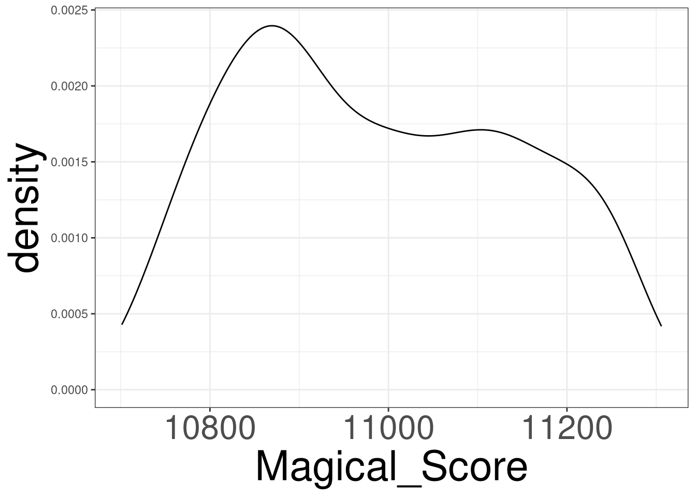
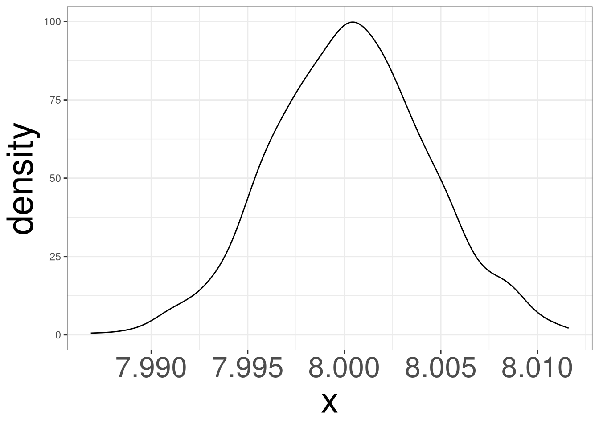

#> Unicorn_ID Age Gender Color Type_of_Unicorn Type_of_Horn Horn_Length Horn_Strength Weight Health_Score Personality_Score Magical_Score Elusiveness_Score Gentleness_Score Nature_Score
#> 1 1 3 Female Brown Ruvas Opal 4.955346 28.16869 160.42118 7 1.330795501 10817.34 34.54175 28.21244 924.2221
#> 2 2 5 Male White Ember Aquamarine 5.606366 28.68743 128.23893 1 1.369650652 10815.60 39.75906 27.90767 923.9906
#> 3 3 1 Genderfluid Black Rainbow Aquamarine 4.962789 27.79517 150.50835 4 1.696095154 10700.52 32.93975 75.58993 909.4231
#> 4 4 17 Non-binary White Ruvas Aquamarine 4.845561 32.10478 130.02290 10 2.661584907 11149.75 26.53849 22.15160 965.9308
#> 5 5 4 Non-binary Silver Rainbow Aquamarine 5.139583 28.59823 92.17478 1 0.551404390 10769.10 37.45529 13.43900 917.9776
#> 6 6 15 Female Silver Ember Aquamarine 4.845207 26.10208 142.18768 8 0.276208352 11108.32 37.80165 33.20928 960.9188
#> 7 7 11 Agender Brown Ruvas Aquamarine 5.081011 27.89359 109.80280 7 0.486435385 10982.73 33.95463 37.83210 945.3008
#> 8 8 14 Agender Silver Ember Opal 5.095046 27.72001 157.70652 8 0.197006140 11109.75 33.78166 21.81121 960.6637
#> 9 9 14 Non-binary Black Rainbow Aquamarine 5.025579 29.34926 155.46184 7 0.959826990 11061.74 36.85237 -11.21101 954.5279
#> 10 10 13 Agender Gray Ruvas Aquamarine 5.247526 30.38675 129.54547 1 0.009503896 11040.12 33.89087 71.43780 952.3782Sampling Distribution
2025-04-01
Sampling Distribution
Sampling Distribution
Simulating Unicorns
Hypothesis Testing
Comparing Proportions
Randomization Tests
P-Value
Process
Sampling Distribution
Sampling Distribution is the idea that the statistics that you generate (slopes and intercepts) have their own data generation process.
In other words, the numerical values you obtain from the lm and glm function can be different if we got a different data set.
Some values will be more common than others. Because of this, they have their own data generating process, like the outcome of interest has it’s own data generating process.
Modelling the Data
\[ Y_i = \beta_0 + \beta_1 X_i + \varepsilon_i \]
- \(Y_i\): Outcome data
- \(X_i\): Predictor data
- \(\beta_0, \beta_1\): parameters
- \(\varepsilon_i\): error term
Error Term
\[ \varepsilon_i \sim DGP \]
Randomness Effect

Simulating Unicorns
Sampling Distribution
Simulating Unicorns
Hypothesis Testing
Comparing Proportions
Randomization Tests
P-Value
Process
Simulating Unicorns
To better understand the variation in statistics, let’s simulate a data set of unicorn characteristics to visualize and understand the variation.
We will simulate a data set using then unicorns function and only need to specify how many unicorns you want to simulate.
Simulating Unicorn Data
Unicorn Data Variables
#> [1] "Unicorn_ID" "Age" "Gender" "Color" "Type_of_Unicorn" "Type_of_Horn" "Horn_Length" "Horn_Strength" "Weight" "Health_Score"
#> [11] "Personality_Score" "Magical_Score" "Elusiveness_Score" "Gentleness_Score" "Nature_Score"We will only look at Magical_Score and Nature_Score.
Magical and Nature Score
\[ Magical = 3423 + 8 \times Nature + \varepsilon \]
\[ \varepsilon \sim N(0, 3.24) \]
Simulating \(N(0, 3.24)\)
Collecting
#> Nature_Score Magical_Score
#> 1 949.8655 11025.12
#> 2 971.2251 11192.06
#> 3 959.8663 11098.00
#> 4 927.1959 10842.51
#> 5 967.4691 11161.71
#> 6 918.7572 10770.08
#> 7 918.9238 10776.59
#> 8 964.7159 11139.25
#> 9 913.6342 10733.49
#> 10 930.5818 10865.76DGP of Magical Score 1
DGP of Magical Score 2
Estimating \(\beta_1\) via lm
Collecting a new sample
Collecting a new sample
Collecting a new sample
Collecting 1000 Samples
#> [1] 7.996395 8.002595 7.992852 8.003773 7.994940 8.003263 7.999747 8.001033 8.009082 7.997921 7.999027 7.998819 7.995531 8.000857 8.005446 8.002371 8.010886 8.001843 8.006321 8.005566 7.995853 8.007061 7.999219
#> [24] 8.007828 8.009847 7.999120 8.009246 7.996545 7.995994 7.998594 7.996209 8.006392 7.991582 8.006220 8.000797 8.003156 8.010276 7.997488 8.001987 7.993228 7.997457 8.001448 8.004025 8.005068 7.998158 8.000210
#> [47] 8.007446 7.999759 7.998339 8.007216 8.000280 7.999143 7.995849 7.996584 8.001926 8.001687 8.000783 8.002954 8.000755 7.995123 8.001835 8.000360 8.003043 7.999251 7.998806 8.004948 7.992851 7.995299 8.005314
#> [70] 8.001079 8.008864 7.999948 8.004279 7.997839 7.997682 7.999110 7.998857 7.998976 7.996634 7.998125 7.995562 8.002865 8.000548 8.005188 8.010414 8.002558 8.006165 8.002396 7.999564 7.992963 7.996670 7.996034
#> [93] 8.008509 7.995526 8.000449 8.001012 7.995039 8.004327 8.001743 7.999565 7.999724 8.002380 8.001964 8.010581 8.003530 8.000306 7.996512 7.995630 7.996640 8.001857 8.000829 7.998170 8.002395 8.008293 7.997571
#> [116] 8.001826 7.994891 7.994118 7.996718 8.004019 7.997162 7.998950 8.002202 8.004770 8.006185 7.999484 8.001881 8.005905 8.001964 8.003234 7.997504 8.005249 8.001112 8.000013 7.999382 8.000224 8.003828 8.007691
#> [139] 8.003526 7.996903 7.999905 8.004238 8.002428 7.993809 8.000651 7.999860 7.999402 7.999589 8.002268 7.996670 8.000947 8.007427 7.997566 7.998658 7.997500 8.001751 7.995917 8.004642 8.003932 8.004948 8.000681
#> [162] 7.995162 7.994973 7.998126 8.003732 8.006716 8.000722 8.007020 8.003324 7.992477 8.003686 8.002915 7.996773 8.004398 7.999241 7.997638 7.995879 8.005060 8.001817 8.000465 8.009234 8.003927 8.005189 8.003751
#> [185] 8.002119 8.001042 7.993342 7.997742 7.999319 7.997104 7.996784 7.990642 7.992449 7.996185 7.988615 8.001243 8.001791 7.998290 8.002517 7.991113 8.005262 8.002148 8.003540 8.000842 8.000015 7.994350 7.995575
#> [208] 7.995571 8.001247 7.999933 7.998569 7.995033 7.993264 7.993521 7.996047 8.002391 7.997752 7.998415 7.996009 7.996309 8.001327 7.999970 8.006330 7.990499 8.001675 7.998220 8.008282 8.003931 7.996994 7.998883
#> [231] 8.000878 8.002391 7.993110 8.001178 7.997628 7.996762 7.995168 8.003605 8.008976 8.000291 7.995949 7.990040 8.000777 8.006017 7.996713 7.995939 8.003493 8.005735 8.004756 8.001645 8.003121 8.006821 8.000829
#> [254] 8.001736 7.994692 7.999947 8.003016 8.003693 8.002860 8.000531 8.005263 8.001823 7.998053 7.999071 8.005201 7.999660 8.001091 7.996365 7.999279 7.999071 8.004912 7.996792 8.002591 7.998283 8.002021 8.005836
#> [277] 8.002602 7.995843 7.997898 7.997233 7.999155 7.994012 8.000525 7.997925 8.004250 8.002573 8.001790 7.999744 8.001276 7.998108 7.997639 8.004241 8.000681 8.004129 7.999037 8.008219 7.999547 7.996709 8.008468
#> [300] 7.997334 7.996210 8.006741 7.999436 8.002213 8.006425 8.000215 8.000625 8.001736 7.999179 8.002712 7.994101 8.001311 8.002877 8.011616 7.992720 8.003217 8.004247 8.008110 7.998926 8.001570 8.005306 7.993838
#> [323] 8.002283 8.000435 8.000304 7.999795 7.997515 8.003996 7.996800 7.997829 8.003025 7.998593 8.003801 8.003806 8.002241 8.005085 7.996627 8.008981 7.999871 7.995131 7.994607 8.003376 8.000974 7.998229 7.996009
#> [346] 7.999252 7.998662 7.999488 8.000837 7.991607 8.004663 8.003643 8.000505 7.997619 7.993649 8.006426 7.995102 7.996005 7.995479 7.995234 7.999735 8.011255 8.001940 7.999680 8.001512 8.002665 8.001484 7.997704
#> [369] 8.004896 7.998087 8.004728 7.999491 8.001214 8.002564 8.001370 8.002933 7.998032 8.005061 7.998809 7.999249 8.005042 8.005509 8.004175 7.998367 7.998087 8.000522 7.991238 7.998317 8.003191 8.000428 8.001436
#> [392] 7.998423 8.001643 7.997051 7.999545 7.996787 7.994228 8.000141 8.003421 7.999244 8.002259 7.998910 7.997052 7.991946 7.997752 8.000389 7.997096 8.002677 8.002320 7.999807 7.991977 7.996881 7.999741 7.998220
#> [415] 8.000633 8.001071 7.998254 8.002271 7.996263 7.999064 8.003794 7.995288 8.001385 8.007497 7.998421 7.996865 8.000485 8.002709 8.001700 7.997114 7.996513 7.999666 8.006616 7.999665 7.998415 8.000870 8.005739
#> [438] 8.001723 8.005095 7.996628 7.996955 8.004207 8.004656 8.000035 7.996744 8.001831 8.001039 8.000112 7.996478 8.000452 7.991128 8.000124 8.000143 7.991104 8.001236 7.997474 7.995550 7.997131 8.002532 8.005559
#> [461] 7.999821 8.005184 7.999230 8.005183 8.003584 8.001592 7.988952 7.996712 7.999275 8.001888 7.999874 8.006212 8.000004 8.003814 7.998265 7.999684 8.002988 7.996046 8.000892 8.003804 8.000448 7.997364 8.003245
#> [484] 7.996163 7.997512 8.003544 8.006369 7.994619 8.002720 8.001166 8.005166 8.000364 7.997399 7.995262 8.002766 8.002331 8.009390 7.994585 7.997928 7.998133 8.001699 7.997387 8.001177 8.001807 8.003056 8.005401
#> [507] 7.998344 8.004841 7.998782 7.999352 7.999138 8.001205 8.001916 7.993447 8.000098 8.000649 7.999885 7.997135 7.993524 8.006730 7.999648 7.998081 8.004735 8.002574 7.995450 7.995921 8.003241 7.998494 8.003527
#> [530] 8.000235 7.993771 7.999782 7.998714 7.998635 8.002561 7.991092 8.005125 7.998936 7.999075 7.995367 7.993644 7.996072 7.999967 8.000832 8.000952 7.998258 7.994809 8.001892 8.000012 8.001097 8.003178 8.000899
#> [553] 8.001411 7.995317 7.999625 8.008050 7.995953 8.004065 7.995237 8.000381 8.003278 8.003987 8.004655 8.004860 8.000211 7.993957 7.998796 8.000062 8.002232 7.990863 8.000489 7.999380 7.996310 7.996566 7.998194
#> [576] 8.003113 8.005048 8.005458 8.002057 8.000698 8.006377 8.001760 7.998332 8.002472 8.000654 7.997904 7.996154 8.009469 7.995845 8.003446 8.000760 7.998987 7.999088 7.998691 8.001376 8.000651 7.997043 7.992407
#> [599] 7.997816 7.997090 8.003794 7.997626 8.004365 7.996053 7.999742 7.999751 7.996396 8.005694 8.002015 8.002773 8.001842 8.002534 7.996848 8.004890 7.989967 8.000376 7.994741 8.003465 7.995122 8.000353 7.999374
#> [622] 7.993073 7.994106 7.997743 8.003707 8.002448 7.996060 8.000266 8.003167 7.998811 8.008131 7.998260 8.001778 7.992627 8.005402 7.999688 7.992580 8.001490 8.004957 8.001599 8.005279 8.005543 8.000739 7.999323
#> [645] 8.002662 8.001456 7.997945 7.996049 8.008580 8.003106 7.993386 8.008014 8.008878 8.000284 8.002732 7.998713 7.997818 7.999204 7.998825 8.005476 8.003989 7.997239 8.008067 8.001244 8.004445 8.003197 8.003607
#> [668] 8.000634 7.996759 8.003939 8.003648 8.000411 8.001351 7.997946 7.998765 8.004264 8.003307 7.998175 8.002372 8.005840 7.996804 8.000447 7.997362 7.998909 8.000512 8.002470 8.005428 7.996772 8.002331 8.003554
#> [691] 7.996590 8.000939 8.004149 8.006828 7.994941 7.986871 8.000476 8.001377 7.995508 7.995739 8.003709 7.998893 8.003591 7.995792 7.997421 8.006038 7.996369 8.002542 8.000812 7.998803 8.003469 7.999089 7.994793
#> [714] 7.999205 7.998944 7.997763 8.001855 7.999410 7.999680 8.000316 7.994470 8.000675 8.001793 7.993535 7.995653 7.993968 7.995349 7.993125 8.002382 7.999949 8.008460 8.006963 7.994967 8.000298 8.000603 8.003991
#> [737] 8.000364 8.004117 8.001056 8.001458 7.997027 7.998348 8.005947 8.000926 7.998667 7.999230 7.995142 8.000554 7.998883 8.008055 8.009065 8.008874 7.998366 8.002554 8.001309 7.994967 8.008030 7.999373 7.999706
#> [760] 8.000554 8.000220 7.999244 7.997893 8.000605 7.999938 7.997672 7.996080 7.999968 7.997739 7.994708 8.000285 7.998208 8.000469 8.003905 8.002425 8.000986 8.003098 8.002976 8.007995 8.004848 7.994079 8.003876
#> [783] 7.995709 8.002883 8.002350 7.997950 7.997934 7.998868 8.001465 8.000550 7.995690 8.003646 7.994503 7.995954 8.001066 7.998361 8.003446 8.006839 7.998871 8.002912 7.998211 8.000092 7.996411 7.996950 7.997503
#> [806] 7.997067 7.998148 8.004766 8.008867 7.994549 7.998865 7.997443 8.001622 8.000112 8.006959 7.996605 8.002187 8.001931 7.997383 7.999100 7.997986 8.003860 8.005590 8.008379 7.996076 8.000385 8.002576 7.999956
#> [829] 7.998012 8.004046 8.001790 7.995405 7.995784 8.002609 7.999447 8.001462 8.000376 8.002294 8.001724 7.991567 7.998358 8.002220 8.005965 7.993428 7.994971 8.004477 7.994898 7.997145 8.002600 7.996452 7.999996
#> [852] 7.997794 8.002106 7.999215 7.999717 8.005671 8.002328 8.004797 7.999014 7.998033 7.998573 8.003625 8.006330 7.995038 7.996879 8.003737 7.999019 7.997042 8.001159 7.998090 8.002774 8.010516 7.994788 8.005409
#> [875] 8.001794 7.996650 8.001592 8.003533 8.004700 7.993114 8.001155 8.005139 8.005484 7.996526 8.001437 8.001648 7.996804 8.000893 7.995754 7.998014 7.995585 8.002121 8.002345 7.999997 8.004865 8.006317 7.996199
#> [898] 8.008242 8.005924 7.997851 7.998076 7.994164 7.995449 8.001081 7.997842 8.007889 7.997429 8.002946 7.990916 8.004922 8.001345 8.000877 8.002308 8.007278 7.999007 8.000770 7.990466 8.000816 7.999398 8.001461
#> [921] 8.004803 8.006545 8.007463 7.999960 7.999730 8.007633 7.995083 8.008741 7.997381 8.001467 7.998252 8.005191 8.000394 7.996061 7.997693 7.997387 7.997323 8.001673 8.000038 8.006180 7.995088 8.002583 7.998649
#> [944] 8.000393 8.005828 7.999329 8.005084 7.997954 7.999236 7.999016 7.994083 8.001517 8.000203 8.004641 7.998718 7.997675 7.994367 8.001347 8.003654 8.006839 7.996830 8.000131 7.996320 7.992386 7.998226 8.004609
#> [967] 7.996892 8.003928 8.002677 8.002500 7.992210 8.002721 8.002244 7.997574 7.997647 8.000337 8.003941 8.000177 8.002187 8.001104 7.998819 7.994684 7.991627 8.008381 8.003823 7.999493 8.000317 8.001792 7.995497
#> [990] 7.994379 8.004372 8.001611 7.999162 8.002971 8.002958 7.997043 8.000303 7.991880 8.002295 7.995519Distributions of \(\hat \beta_1\)
Hypothesis Testing
Sampling Distribution
Simulating Unicorns
Hypothesis Testing
Comparing Proportions
Randomization Tests
P-Value
Process
Inference
In the real world, we do not know how the model is generated; therefore, the parameters that are being estimated are unknown.
We use statistics to determine what is our best guess of what the true parameter is.
We can use processes known as inferential procedures to determine which values of the parameter it cannot be. This is known as inference.
Hypothesis Tests
Hypothesis tests are used to test whether claims are valid or not. This is conducted by collecting data, setting the Null and Alternative Hypothesis.
Null Hypothesis \(H_0\)
The null hypothesis is the claim that is initially believed to be true. For the most part, it is always equal to the hypothesized value.
Alternative Hypothesis \(H_a\)
The alternative hypothesis contradicts the null hypothesis.
Example of Null and Alternative Hypothesis
We want to see if \(\mu\) (the true value) is different from \(\mu_0\) (a number we want to test)
| Null Hypothesis | Alternative Hypothesis |
|---|---|
| \(H_0: \mu=\mu_0\) | \(H_a: \mu\ne\mu_0\) |
| \(H_0: \mu\le\mu_0\) | \(H_a: \mu>\mu_0\) |
| \(H_0: \mu\ge\mu_0\) | \(H_0: \mu<\mu_0\) |
Hypothesis Test
The idea of hypothesis testing is to generate the sampling distribution of a statistic assuming the null hypothesis is true.
Compute the statistic from your data.
Afterwards, see where your statistic lies in comparison of your null sampling distribution.
Comparison of Null Distribution
If your statistic lies near the mounds, it is believed that your data came from the null distribution.
If your statistic is more in the tail regions, it is believed that your data did not come from your null distribution.
Comparing Proportions
Sampling Distribution
Simulating Unicorns
Hypothesis Testing
Comparing Proportions
Randomization Tests
P-Value
Process
Motivation
The bacteria data set contians information on whether bacteria (y: y or n) is present after utilizing treatments (ap: active or placebo).
We are interesting in determine the proportion of having bacteria present is different for those taking an “active” or “placebo”.
Crosstabulation
Comparing Proportions
We are interesting in determining if different groups see different proportions of a binary outcome.
We compute the proportions of observing the binary outcome in Group 1 and Group 2 and see if they are fundamentally different from each other.
2 by 2 Cross Tabulations
| Groups | Outcome 1 | Outcome 2 |
| Group 1 | \(p_{11}\) | \(p_{21}\) |
| Group 2 | \(p_{12}\) | \(p_{22}\) |
We want to compare \(p_{11}\) and \(p_{12}\), to determine if the probability of outcome 1 are the same for both groups.
Test Statistic
We can use both \(p_{11}\) and \(p_{12}\) to determine if there is a fundamental difference.
However, it will be more beneficial to utilize one statistic to contruct the sampling distribution.
\[ T = p_{11} - p_{12} \]
Obtain Proportion in R
Obtain Difference in R
Bacteria Example
Bacteria Example
Hypothesis Test
Is 12.5% of a difference large enough to indicate that an active drug is effective against the bacteria, or seeing this can be due to random chance.
Hypotheis Test
We will test the following hypothesis:
\[ H_0:\ p_1-p_2 = 0 \]
\[ H_a:\ p_1 - p_2 \neq 0 \]
Hypothesis Test
In words:
\(H_0\): The variables bacteria presence and active drug treatment are independent of each other.
\(H_a\): The variables bacteria presence and active drug treatment are dependent of each other.
Randomization Tests
Sampling Distribution
Simulating Unicorns
Hypothesis Testing
Comparing Proportions
Randomization Tests
P-Value
Process
Visualizing
Code
ab <- cat_stats(bacteria$y[bacteria$ap == "a"], pie = TRUE)
abp <- ggplot(ab, aes(fill = Category, values = n)) +
geom_waffle(make_proportional = TRUE) +
ggtitle("Active Treatment") +
theme_void() +
theme(plot.title = element_text(hjust = 0.5))
pb <- cat_stats(bacteria$y[bacteria$ap == "p"], pie = TRUE)
pbp <- ggplot(pb, aes(fill = Category, values = n)) +
geom_waffle(make_proportional = TRUE) +
ggtitle("Placebo") +
theme_void() +
theme(plot.title = element_text(hjust = 0.5))
abp + pbp + plot_layout(guides = 'collect')Randomization Tests
The idea of a randomization test is that each observed outcome variable was dictated by a mathematical model.
Therefore, a randomization is most interested to determine if the mathematical model exist or completely random.
This is equivalent to saying the there is not pattern in the data. IE, independent variables.
Randomization Tests
\(H_0\): The outcome and predictor variables are independent of each other.
\(H_a\): The outcome and predictor variables are dependent of each other.
Randomziation 1
Code
ab <- cat_stats(shuffle(bacteria$y)[bacteria$ap == "a"], pie = TRUE)
abp <- ggplot(ab, aes(fill = Category, values = n)) +
geom_waffle(make_proportional = TRUE) +
ggtitle("Active Treatment") +
theme_void() +
theme(plot.title = element_text(hjust = 0.5))
pb <- cat_stats(shuffle(bacteria$y)[bacteria$ap == "p"], pie = TRUE)
pbp <- ggplot(pb, aes(fill = Category, values = n)) +
geom_waffle(make_proportional = TRUE) +
ggtitle("Placebo") +
theme_void() +
theme(plot.title = element_text(hjust = 0.5))
abp + pbp + plot_layout(guides = 'collect')Randomziation 2
Code
ab <- cat_stats(shuffle(bacteria$y)[bacteria$ap == "a"], pie = TRUE)
abp <- ggplot(ab, aes(fill = Category, values = n)) +
geom_waffle(make_proportional = TRUE) +
ggtitle("Active Treatment") +
theme_void() +
theme(plot.title = element_text(hjust = 0.5))
pb <- cat_stats(shuffle(bacteria$y)[bacteria$ap == "p"], pie = TRUE)
pbp <- ggplot(pb, aes(fill = Category, values = n)) +
geom_waffle(make_proportional = TRUE) +
ggtitle("Placebo") +
theme_void() +
theme(plot.title = element_text(hjust = 0.5))
abp + pbp + plot_layout(guides = 'collect')Randomziation 3
Code
ab <- cat_stats(shuffle(bacteria$y)[bacteria$ap == "a"], pie = TRUE)
abp <- ggplot(ab, aes(fill = Category, values = n)) +
geom_waffle(make_proportional = TRUE) +
ggtitle("Active Treatment") +
theme_void() +
theme(plot.title = element_text(hjust = 0.5))
pb <- cat_stats(shuffle(bacteria$y)[bacteria$ap == "p"], pie = TRUE)
pbp <- ggplot(pb, aes(fill = Category, values = n)) +
geom_waffle(make_proportional = TRUE) +
ggtitle("Placebo") +
theme_void() +
theme(plot.title = element_text(hjust = 0.5))
abp + pbp + plot_layout(guides = 'collect')Randomziation 4
Code
ab <- cat_stats(shuffle(bacteria$y)[bacteria$ap == "a"], pie = TRUE)
abp <- ggplot(ab, aes(fill = Category, values = n)) +
geom_waffle(make_proportional = TRUE) +
ggtitle("Active Treatment") +
theme_void() +
theme(plot.title = element_text(hjust = 0.5))
pb <- cat_stats(shuffle(bacteria$y)[bacteria$ap == "p"], pie = TRUE)
pbp <- ggplot(pb, aes(fill = Category, values = n)) +
geom_waffle(make_proportional = TRUE) +
ggtitle("Placebo") +
theme_void() +
theme(plot.title = element_text(hjust = 0.5))
abp + pbp + plot_layout(guides = 'collect')Randomization Test
The act of randomizing the outcome to a set of predictor variables allow you to construct the sampling of distribution of the null hypothesis.
\(H_0\): The variables bacteria presence and active drug treatment are independent of each other. \(p_{active}-p_{placebo} = 0\)
\(H_a\): The variables bacteria presence and active drug treatment are dependent of each other. \(p_{active}-p_{placebo} \neq 0\)
Simulating \(H_0\)
We are interested in simulating the distribution for \(p_{active}-p_{placebo}\). We do this by randomly assigning the observed outcomes to the predictor variable. Then, we compute the difference in proportions using the props function. Afterwards, we store the value and repeat the process again.
Lastly, we compare where the data statistic compared to our simulated distribution.
Shuffling Data
The shuffle function will mix up a variable in R:
Shuffle Data
#> [1] y y y y y y n y y y y y y y y y y y y y y y y y y y y y n n n y n y y y y y y y y y y y y y y y y y n n y y y y y y y y y n y y y y y y y n y y y y y n y y y n n n y y n y n y y y y y y y y y y y y y y n y n y n y
#> [108] y y n n n y n n y n n y y y y y y y n n y y y n y y y y y y n y y y y y y y y y y n n n y y y y y y y y y y y y y y y y y y n y n n y n y y n y y y y y y y y y y y y y y y y y y y n y y y y y y y y y y n n y y y n
#> [215] n y y y n y
#> Levels: n y#> [1] y n y n n y y y y n y y y y y n y y y y y y n n n y n n n y n n y n n y y y y y y n n y y n y y y y y y y y y n y n y y y y y y y n y y n y y y n y n y y y y y y y y y y y y y y y y y y y y y y y y n y y y y y y y
#> [108] n n y y n y y y y y y y y y y y y y y n n y y y y y y y y n y y y y y y y y y y y n y y y n y y y y y y n y y y y y y y y y y y y y y y y y y y y y y y y n n n y y y y y y y y y y y y y n n y n y y y y y y y y y y
#> [215] y n n y y n
#> Levels: n yComputing Proportions
Repeat Process
#> [1] 0.0141129#> [1] -0.07829301#> [1] 0.06955645#> [1] -0.05981183#> [1] -0.00436828#> [1] 0.03259409#> [1] 0.03259409The replicate Function
The replicate function will execute a task multiple times and store the values in a vector.
- N: number of simulations
- FUN: the command to be repeated
Repeat 1000 times
#> [1] -0.00436828 -0.00436828 0.08803763 0.05107527 0.01411290 -0.07829301 -0.05981183 -0.00436828 -0.07829301 -0.00436828 0.03259409 -0.05981183 -0.00436828 -0.00436828 -0.05981183 -0.00436828 0.03259409
#> [18] 0.08803763 0.08803763 0.01411290 0.01411290 -0.18918011 -0.05981183 0.01411290 0.10651882 0.05107527 0.08803763 -0.02284946 0.01411290 0.05107527 -0.02284946 -0.00436828 -0.00436828 0.06955645
#> [35] -0.05981183 -0.05981183 -0.00436828 0.01411290 -0.04133065 -0.00436828 0.06955645 -0.11525538 -0.04133065 0.08803763 0.05107527 0.03259409 -0.00436828 0.06955645 0.10651882 -0.00436828 -0.04133065
#> [52] 0.01411290 0.05107527 0.01411290 0.05107527 -0.07829301 0.06955645 -0.02284946 -0.07829301 -0.00436828 -0.05981183 -0.07829301 0.01411290 0.03259409 0.03259409 -0.02284946 0.03259409 -0.00436828
#> [69] 0.01411290 -0.05981183 0.05107527 -0.02284946 -0.05981183 -0.04133065 -0.02284946 0.06955645 0.03259409 -0.07829301 -0.04133065 -0.00436828 -0.07829301 -0.02284946 -0.00436828 -0.00436828 -0.02284946
#> [86] -0.04133065 -0.00436828 -0.09677419 0.12500000 0.05107527 0.01411290 0.01411290 0.01411290 -0.04133065 0.01411290 0.06955645 0.06955645 -0.04133065 0.01411290 -0.00436828 0.03259409 -0.05981183
#> [103] 0.03259409 0.01411290 -0.00436828 -0.00436828 -0.00436828 0.01411290 0.03259409 0.05107527 0.05107527 -0.00436828 -0.00436828 -0.02284946 0.03259409 -0.02284946 -0.05981183 -0.00436828 0.06955645
#> [120] -0.05981183 0.01411290 -0.00436828 0.03259409 0.06955645 0.01411290 -0.05981183 0.01411290 -0.00436828 -0.04133065 0.01411290 -0.09677419 0.03259409 -0.00436828 0.05107527 -0.02284946 0.10651882
#> [137] 0.10651882 -0.13373656 -0.05981183 0.03259409 0.06955645 0.03259409 0.05107527 0.05107527 -0.05981183 0.05107527 -0.07829301 0.05107527 0.01411290 0.06955645 0.01411290 -0.02284946 0.01411290
#> [154] -0.00436828 0.06955645 0.03259409 0.05107527 0.06955645 -0.02284946 0.08803763 0.03259409 -0.07829301 0.01411290 0.01411290 -0.07829301 -0.04133065 0.01411290 0.06955645 -0.00436828 -0.02284946
#> [171] -0.04133065 0.01411290 0.06955645 -0.04133065 0.03259409 0.03259409 -0.00436828 -0.02284946 -0.00436828 -0.02284946 0.03259409 -0.00436828 -0.09677419 -0.04133065 -0.09677419 0.03259409 -0.09677419
#> [188] 0.01411290 0.06955645 -0.05981183 -0.00436828 0.03259409 -0.13373656 0.06955645 -0.04133065 0.06955645 0.01411290 -0.02284946 -0.02284946 -0.04133065 -0.02284946 -0.02284946 -0.02284946 -0.00436828
#> [205] -0.05981183 -0.02284946 0.03259409 -0.09677419 0.05107527 0.03259409 0.03259409 -0.02284946 0.03259409 0.03259409 -0.04133065 0.01411290 -0.02284946 -0.04133065 0.05107527 -0.00436828 0.01411290
#> [222] 0.01411290 -0.02284946 0.03259409 0.10651882 -0.04133065 -0.09677419 -0.04133065 -0.02284946 0.01411290 0.08803763 0.05107527 0.05107527 0.14348118 -0.00436828 0.05107527 -0.00436828 -0.04133065
#> [239] -0.00436828 0.05107527 -0.05981183 -0.00436828 0.03259409 0.08803763 0.05107527 0.10651882 0.03259409 0.03259409 -0.02284946 -0.02284946 0.01411290 -0.00436828 0.03259409 0.08803763 0.03259409
#> [256] -0.00436828 -0.02284946 0.03259409 0.03259409 0.01411290 -0.07829301 -0.02284946 -0.04133065 0.06955645 -0.11525538 -0.02284946 0.03259409 0.01411290 0.08803763 -0.04133065 -0.04133065 -0.02284946
#> [273] 0.05107527 -0.09677419 -0.07829301 -0.02284946 0.01411290 0.08803763 0.06955645 0.08803763 -0.02284946 0.05107527 0.05107527 -0.00436828 -0.09677419 0.05107527 0.01411290 -0.00436828 0.05107527
#> [290] 0.06955645 0.01411290 -0.00436828 0.03259409 -0.09677419 0.03259409 -0.11525538 -0.09677419 0.03259409 -0.09677419 0.03259409 -0.07829301 0.03259409 -0.02284946 -0.00436828 0.05107527 -0.05981183
#> [307] -0.02284946 0.05107527 0.06955645 0.06955645 -0.02284946 -0.02284946 0.01411290 0.05107527 0.10651882 -0.05981183 0.05107527 0.12500000 0.03259409 -0.02284946 0.06955645 -0.04133065 -0.09677419
#> [324] -0.04133065 -0.00436828 0.06955645 0.05107527 -0.05981183 -0.00436828 -0.00436828 0.01411290 0.01411290 0.03259409 0.05107527 0.03259409 0.05107527 0.05107527 0.06955645 0.05107527 -0.05981183
#> [341] -0.00436828 0.03259409 0.12500000 -0.00436828 0.01411290 0.10651882 -0.00436828 0.08803763 -0.00436828 -0.00436828 -0.09677419 0.03259409 -0.05981183 -0.00436828 0.03259409 0.03259409 0.03259409
#> [358] -0.00436828 -0.02284946 -0.00436828 0.05107527 -0.00436828 -0.04133065 -0.02284946 -0.05981183 0.10651882 0.01411290 -0.00436828 -0.00436828 0.03259409 -0.02284946 -0.02284946 0.08803763 -0.00436828
#> [375] -0.09677419 -0.04133065 0.01411290 -0.09677419 0.06955645 -0.05981183 0.01411290 -0.02284946 -0.04133065 0.01411290 -0.07829301 0.06955645 -0.02284946 0.05107527 0.01411290 0.05107527 -0.02284946
#> [392] 0.03259409 0.12500000 0.08803763 0.06955645 0.01411290 -0.11525538 0.05107527 -0.09677419 0.05107527 0.01411290 -0.00436828 -0.09677419 -0.00436828 -0.04133065 0.10651882 0.03259409 -0.04133065
#> [409] 0.03259409 -0.07829301 -0.07829301 -0.04133065 -0.02284946 -0.00436828 0.06955645 -0.00436828 -0.00436828 0.01411290 0.10651882 0.03259409 -0.09677419 -0.07829301 0.16196237 0.06955645 -0.00436828
#> [426] 0.01411290 0.08803763 -0.04133065 -0.02284946 -0.02284946 -0.02284946 0.05107527 0.03259409 -0.07829301 0.10651882 0.05107527 0.08803763 -0.07829301 0.14348118 -0.00436828 -0.02284946 0.05107527
#> [443] -0.05981183 -0.02284946 -0.02284946 0.01411290 -0.02284946 -0.02284946 0.10651882 -0.09677419 -0.04133065 -0.11525538 0.10651882 -0.02284946 0.01411290 -0.02284946 -0.04133065 0.03259409 0.10651882
#> [460] 0.01411290 0.01411290 0.06955645 0.06955645 0.05107527 0.10651882 0.05107527 -0.11525538 -0.11525538 0.05107527 -0.04133065 -0.02284946 0.05107527 -0.05981183 -0.00436828 -0.00436828 -0.00436828
#> [477] 0.06955645 0.08803763 0.05107527 0.01411290 -0.02284946 0.01411290 -0.04133065 0.03259409 -0.02284946 -0.04133065 0.01411290 -0.00436828 -0.04133065 -0.05981183 0.05107527 -0.00436828 -0.00436828
#> [494] 0.05107527 0.03259409 0.01411290 0.05107527 0.01411290 0.03259409 0.03259409 -0.09677419 -0.05981183 -0.00436828 -0.15221774 0.01411290 0.06955645 -0.00436828 -0.05981183 -0.02284946 0.05107527
#> [511] -0.00436828 -0.02284946 0.05107527 0.10651882 0.03259409 0.01411290 -0.05981183 0.08803763 -0.05981183 -0.02284946 -0.05981183 -0.00436828 -0.04133065 0.05107527 0.01411290 0.01411290 -0.05981183
#> [528] -0.00436828 0.06955645 -0.02284946 0.06955645 -0.05981183 -0.02284946 0.05107527 0.05107527 -0.00436828 0.05107527 -0.09677419 -0.05981183 0.03259409 -0.00436828 -0.02284946 0.01411290 0.01411290
#> [545] 0.01411290 0.08803763 0.01411290 0.06955645 0.03259409 -0.07829301 -0.02284946 0.05107527 0.03259409 -0.04133065 -0.00436828 -0.02284946 -0.02284946 0.08803763 -0.00436828 -0.04133065 -0.05981183
#> [562] -0.00436828 -0.04133065 -0.09677419 -0.04133065 -0.02284946 -0.02284946 0.06955645 0.05107527 0.05107527 -0.04133065 0.01411290 0.03259409 -0.05981183 -0.17069892 -0.04133065 -0.00436828 0.01411290
#> [579] -0.02284946 -0.02284946 -0.05981183 0.05107527 0.01411290 -0.02284946 -0.00436828 0.06955645 0.01411290 -0.04133065 -0.00436828 -0.05981183 -0.00436828 0.03259409 0.01411290 0.06955645 -0.02284946
#> [596] -0.02284946 -0.00436828 0.05107527 0.01411290 0.12500000 0.10651882 -0.02284946 -0.05981183 -0.02284946 -0.05981183 0.05107527 -0.07829301 0.01411290 -0.09677419 -0.00436828 0.05107527 0.03259409
#> [613] 0.10651882 0.05107527 -0.04133065 -0.05981183 -0.00436828 -0.02284946 -0.07829301 -0.07829301 -0.00436828 0.05107527 -0.02284946 -0.02284946 -0.07829301 -0.00436828 -0.04133065 -0.04133065 0.05107527
#> [630] -0.02284946 0.01411290 0.01411290 0.03259409 0.03259409 -0.00436828 -0.07829301 0.01411290 -0.05981183 -0.02284946 -0.07829301 0.01411290 -0.04133065 -0.04133065 -0.04133065 -0.00436828 -0.00436828
#> [647] 0.03259409 -0.09677419 0.03259409 0.01411290 -0.05981183 -0.02284946 -0.02284946 0.05107527 -0.07829301 -0.04133065 0.01411290 -0.04133065 0.10651882 -0.02284946 0.10651882 0.01411290 0.03259409
#> [664] -0.05981183 -0.05981183 -0.00436828 0.06955645 0.08803763 -0.11525538 0.03259409 -0.04133065 0.10651882 -0.00436828 -0.09677419 0.03259409 -0.11525538 0.01411290 0.03259409 0.06955645 0.08803763
#> [681] -0.09677419 -0.00436828 0.05107527 0.01411290 -0.09677419 -0.04133065 0.01411290 0.03259409 -0.02284946 0.03259409 -0.02284946 0.01411290 -0.05981183 -0.04133065 -0.02284946 -0.05981183 -0.09677419
#> [698] -0.05981183 -0.02284946 -0.07829301 -0.00436828 -0.00436828 -0.11525538 -0.00436828 0.03259409 -0.04133065 0.05107527 0.05107527 0.01411290 -0.02284946 0.06955645 0.10651882 0.03259409 -0.05981183
#> [715] -0.22614247 0.06955645 0.01411290 0.03259409 0.03259409 -0.04133065 0.01411290 -0.00436828 0.05107527 -0.04133065 -0.00436828 0.01411290 -0.02284946 -0.04133065 0.01411290 0.01411290 -0.05981183
#> [732] 0.05107527 0.01411290 -0.05981183 -0.05981183 -0.11525538 -0.11525538 0.10651882 -0.04133065 -0.04133065 -0.02284946 -0.05981183 -0.02284946 -0.04133065 -0.00436828 -0.02284946 0.01411290 -0.05981183
#> [749] -0.07829301 0.01411290 0.03259409 0.05107527 0.05107527 -0.02284946 -0.02284946 0.03259409 -0.00436828 -0.00436828 0.10651882 0.05107527 -0.02284946 0.06955645 -0.02284946 -0.02284946 -0.07829301
#> [766] 0.05107527 0.05107527 0.05107527 -0.00436828 0.01411290 0.03259409 0.05107527 -0.11525538 0.03259409 0.05107527 -0.02284946 -0.04133065 0.01411290 0.03259409 0.03259409 0.01411290 -0.11525538
#> [783] 0.01411290 -0.05981183 -0.05981183 0.05107527 0.03259409 0.10651882 -0.11525538 -0.04133065 0.01411290 0.05107527 0.01411290 0.08803763 0.06955645 0.03259409 -0.02284946 0.06955645 0.01411290
#> [800] 0.05107527 0.03259409 0.05107527 -0.02284946 -0.04133065 -0.07829301 0.03259409 -0.04133065 -0.00436828 0.05107527 0.08803763 -0.04133065 0.01411290 -0.00436828 0.03259409 -0.04133065 -0.04133065
#> [817] -0.00436828 0.06955645 -0.07829301 0.01411290 0.08803763 0.10651882 0.05107527 -0.15221774 -0.02284946 0.10651882 -0.05981183 -0.07829301 -0.05981183 0.01411290 0.06955645 0.01411290 -0.09677419
#> [834] 0.03259409 -0.02284946 0.05107527 -0.05981183 -0.00436828 -0.04133065 0.03259409 -0.00436828 -0.00436828 0.01411290 0.12500000 -0.04133065 -0.09677419 0.05107527 0.03259409 0.06955645 -0.02284946
#> [851] 0.05107527 0.01411290 0.05107527 -0.05981183 -0.05981183 -0.05981183 0.05107527 0.01411290 0.05107527 0.03259409 -0.04133065 0.05107527 0.01411290 -0.00436828 0.01411290 0.01411290 0.01411290
#> [868] 0.05107527 -0.09677419 -0.02284946 0.03259409 -0.04133065 0.01411290 -0.00436828 0.01411290 -0.07829301 -0.05981183 -0.05981183 -0.02284946 -0.05981183 -0.02284946 0.05107527 0.06955645 0.06955645
#> [885] -0.05981183 -0.07829301 0.03259409 -0.07829301 -0.07829301 -0.04133065 0.05107527 -0.00436828 -0.00436828 0.05107527 0.01411290 -0.05981183 0.05107527 0.03259409 -0.00436828 0.01411290 -0.07829301
#> [902] 0.03259409 -0.04133065 -0.00436828 -0.00436828 -0.05981183 -0.00436828 0.05107527 0.05107527 -0.07829301 0.03259409 0.01411290 -0.04133065 0.05107527 -0.07829301 0.03259409 -0.07829301 -0.04133065
#> [919] 0.03259409 -0.00436828 0.01411290 0.05107527 0.01411290 0.10651882 -0.00436828 0.01411290 0.05107527 -0.00436828 0.05107527 -0.02284946 -0.02284946 0.05107527 -0.02284946 -0.09677419 -0.13373656
#> [936] -0.05981183 0.08803763 -0.00436828 0.05107527 -0.00436828 -0.00436828 0.03259409 0.08803763 0.14348118 -0.02284946 -0.02284946 -0.00436828 0.05107527 0.05107527 0.05107527 0.05107527 0.03259409
#> [953] 0.01411290 -0.09677419 -0.05981183 -0.04133065 0.05107527 -0.00436828 -0.04133065 0.03259409 0.03259409 -0.05981183 0.01411290 -0.00436828 -0.02284946 -0.05981183 0.03259409 0.03259409 -0.02284946
#> [970] 0.03259409 0.01411290 0.03259409 0.12500000 0.05107527 0.06955645 0.01411290 -0.02284946 0.05107527 -0.00436828 0.03259409 -0.02284946 0.06955645 -0.00436828 0.03259409 -0.09677419 -0.04133065
#> [987] 0.06955645 0.01411290 -0.04133065 -0.00436828 -0.04133065 0.03259409 -0.04133065 0.01411290 -0.04133065 0.01411290 -0.00436828 0.01411290 0.05107527 0.12500000Visualize Data
Compute Data Propoortion
Comparison
P-Value
Sampling Distribution
Simulating Unicorns
Hypothesis Testing
Comparing Proportions
Randomization Tests
P-Value
Process
P-Value
The p-value determines the probability of observing our data statistic, given that the null hypothesis is true.
When the p-value is large, we believe there is a high probability that the null hypothesis is true.
When the p-value is small, we believe that it is unlikely the the null hypothesis is true. We believe that the alternative may be a better model.
2-Sided P-Value
Due to randomness, there is a possibility of observing the same magnitude of \(p_{active}-p_{placebo}\), but in the opposite direction; therefore, we must look at both sides.
Visually 2-Sided P-Value
Computing the p-value
We will count how many simulated \(p_{active}-p_{placebo}\)’s are more extreme than our test statistic and divided by the number of simulations plus one.
Computing the p-value
\[ p = \frac{m +1}{N + 1} \]
- \(m\): number of more extreme values than our test statistic
- \(N\): number of simulations
Computing the P-Value
Computing P-value
Process
Sampling Distribution
Simulating Unicorns
Hypothesis Testing
Comparing Proportions
Randomization Tests
P-Value
Process
Identify your Variables
- What is your predictor variable?
- What is your outcome variable?
Create your Hypothesis
Choose a hypothesis that is appropriate for your model.
Compute a test statistic for the data
Identify what is you want to compute and compare.
Generate a null distribution.
Simulate the potential null distribution using the shuffle and replicate function.
Compute the p-value
Use the probability formula to determine the likelihood of observing your test statistic given that the null hypothesis is true.